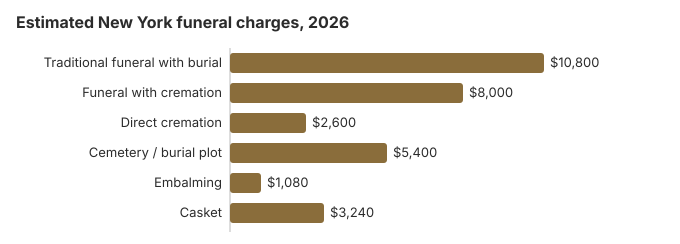

Funeral Costs in New York: What Families Pay in 2026
New York is one of the costlier places to hold a funeral. We put a traditional service at about $10,800, 30% over the $8,300 national median, mostly because of land and labor costs downstate, and 55% of deaths in the state now end in cremation.
New York Funeral Prices, Line by Line
These are our averages for the usual charges. The state licenses funeral homes but does not regulate their prices, and Manhattan quotes can look nothing like ones from the Southern Tier.
| Service | Average Cost | Range |
|---|---|---|
| Traditional funeral with burial | $10,800 | $8,100 – $14,040 |
| Funeral with cremation | $8,000 | $6,400 – $10,400 |
| Direct cremation | $2,600 | $1,820 – $3,640 |
| Cemetery / burial plot | $5,400 | $2,700 – $10,800 |
| Embalming | $1,080 | $500 – $1,500 |
| Casket | $3,240 | $1,080 – $8,640 |
Where these numbers come from: a cost model we maintain, not a canvass of New York funeral homes. Use them to plan, not as a quote or advice. Our state model and the disclaimer explain the limits.
State sources: NYC HRA.

Cremation Versus Burial in New York
Cremation
- About $2,600 for direct cremation
- About $8,000 with a funeral service
- No grave to buy
- Memorial timing is up to you
- Chosen for 55% of New York deaths
Traditional Burial
- About $10,800 for the service
- Plus about $5,400 for the plot
- Cemeteries generally want a vault or liner
- A lasting place to visit
- Typical metal casket, US median: about $2,500 (NFDA 2023 General Price List Study); retailers in New York charge more or less
Why New York Costs More
Three things push New York prices up.
Cemetery land around New York City is scarce and expensive, staff and rent cost more, and many families follow religious customs with their own requirements. Upstate, more competition and a 55% cremation rate help keep cremation prices down.
Major Cities in New York
Estimates for New York's main cities:
More New York Cost Guides
Separate New York guides:
Cremation Costs in New York
What New York cremation costs, from about $2,600 direct to $8,000 with a service, with urns and the rules for scattering.
Burial Costs in New York
Every part of a New York burial, from the roughly $5,400 plot to the casket, vault, opening fee and headstone; totals run $24,800 to $29,300.
Federal Protections in New York
Line Items Worth Challenging in New York
Check a New York quote for these:
- Embalming listed as required. New York rarely requires it, so ask for the specific rule.
- Perpetual-care fees: usually $200–$1,000 for upkeep, on top of the roughly $5,400 plot.
- Weekend and holiday surcharges: 15–25% extra, or $1,620–$2,700 against a $10,800 funeral.
Faith Traditions and New York Prices
Catholic, Jewish, Greek Orthodox and Protestant families in New York each have their own customs, and many funeral homes specialize in one community. When religion matters, a home that serves your community every week often prices well because of the volume, and may beat a general "budget" provider.
The Cheapest New York Options
| Choice | Typical cost | Details |
|---|---|---|
| Direct cremation | $2,600 | Cremation only; a permit is required, with no fixed waiting period (Pub. Health Law 4145; N-PCL 1517). |
| Direct burial | $5,400 | Quick burial without embalming or visitation; the cemetery bills plot and opening on its own. |
| Green burial | $5,940 | A shroud or plain biodegradable casket, no embalming; only some New York cemeteries accept it. |
| Cremation + memorial | $8,000 | Cremation and a memorial held afterwards |
| Traditional funeral | $10,800 | Viewing, service and burial together |
Paying for a New York Funeral
- In New York City, HRA contributes up to $1,700 if the whole funeral stays at or below about $3,400; counties outside the city have their own limits.
Educational Resources
- Funeral Consumers AllianceIndependent nonprofit consumer advocacy for funeral rights
- FTC Funeral RuleThe federal rule protecting funeral consumers
- Funeral Insurance GuideCompare final expense and burial insurance options
- Best Burial Insurance CompaniesSide-by-side comparison of top burial insurance providers
- Payment Assistance GuideGovernment programs and financial help for funeral costs
- Insurance Plan ComparisonCompare coverage, premiums, and payout speed across providers
Compare Funeral Costs
- Average Funeral Cost in 2026National cost breakdown with real prices
- Cremation vs. Burial Cost ComparisonSide-by-side price comparison to help you decide
- Funeral Cost BreakdownEvery line item explained: know what you're paying for
- Cheapest Funeral OptionsLower-cost alternatives, with typical price ranges
- Direct Cremation: Most Affordable OptionNFDA 2023 median $2,645 with a family-supplied container (latest available)
- How to Compare Funeral PricesStep-by-step guide to getting the best price
Planning a New York Funeral, in Order
Doing these in sequence avoids the mistakes that cost New York families the most:
- Pick cremation or burial: cremation in New York or burial in New York.
Death certificates in New York: two systems
Where the death happened decides where you order. For a death in one of the five boroughs, certificates come from the New York City Department of Health and Mental Hygiene, not the state. For a death anywhere else in New York, the State Department of Health in Albany or the local registrar in the town or city of death issues them (NYS Department of Health, death certificates; checked October 29, 2026).
- State fees: $30 per certified copy by mail; $45 per copy ordered online or by phone, plus the vendor's fee.
- Waiting time: the state quotes 10 to 12 weeks for mail orders, sent to PO Box 2602, Albany, NY 12220-2602, on form DOH-4376. A local registrar is usually much quicker.
- Who can order: the spouse, parent, child or sibling, or someone with a documented lawful right or claim, such as an estate executor.
- No refunds: the fee is kept if no record is found, so check the date and place of death before applying.
Since the funeral director files the certificate in New York, the quickest way to get copies is usually to order them through the funeral home at the start. Count how many you need first: life insurers, banks, brokerages, pension plans and the DMV generally want a certified copy each, while many smaller accounts accept a photocopy. At $30 to $45 a copy from the state, three extra copies you never use cost up to $135, but running short and waiting another 10 to 12 weeks for a mail order can hold up an estate.
Who regulates New York funerals, and where to get help
The Bureau of Funeral Directing in the New York State Department of Health licenses funeral directors and funeral firms. Call 518-402-0785 to look up a license or complain.
New York is one of the nine states where a licensed funeral director has to handle certain steps: filing the death certificate, moving the body, getting the permit and supervising the burial or cremation (N.Y. Pub. Health Law § 4140, summarized by the Funeral Consumers Alliance). Everything else, from washing and dressing the body to holding the service at home, the family can do itself. Cremation needs a permit but has no fixed waiting period (Pub. Health Law 4145; N-PCL 1517).
Public burial help
Each county social-services district writes its own burial-assistance rules. In New York City, the Human Resources Administration pays up to $1,700 and the total funeral generally must not exceed $3,400 (NYC HRA).
Veterans cemeteries
The state has seven national cemeteries: Bath (607-664-4853), Calverton (631-727-5410), Gerald B. H. Solomon Saratoga (518-581-9128), Western New York (585-297-1300), and three that take cremated remains only, Long Island (631-454-4949), St. Albans (718-298-8545) and Woodlawn in Elmira (607-732-5411). The funeral director books them through the VA's National Cemetery Scheduling Office at 800-535-1117. The New York State Veterans Cemetery - Finger Lakes (607-379-0197) is booked directly.
A short New York checklist
- Get each funeral home's General Price List; an in-person request must be honored.
- Decide on embalming and a viewing first; they are often the largest optional costs.
- Apply to HRA in the city, or the county district upstate, before signing a contract.
- For a veteran, ask about Calverton or the nearest national cemetery before buying a plot.
- Report a home that withholds prices to 518-402-0785.
Frequently Asked Questions
How much does a funeral cost in New York?
We estimate $10,800 for a traditional funeral, 30% over the $8,300 national median; $8,000 for cremation with a service; and from $2,600 for direct cremation. Burial adds about $5,400 in cemetery costs.
Is cremation cheaper than burial in New York?
Much cheaper: about $2,600 for direct cremation versus $10,800 for a funeral with burial before the plot, a difference of more than $8,200. New York's 55% cremation rate is still under the 63.4% national rate NFDA projected for 2025.
What rights do New York families have with funeral homes?
The FTC Funeral Rule gives you an itemized price list, phone quotes and the right to supply your own casket or urn without a fee. New York requires a licensed funeral director for certain steps, such as filing the death certificate and getting the permit (Pub. Health Law § 4140), and the Bureau of Funeral Directing, 518-402-0785, licenses homes and takes complaints.
How can I spend less on a New York funeral?
Compare three price lists, buy only the services you want, and consider direct cremation at about $2,600. For a winter death, December to March, ask cemeteries about frozen-ground charges, which many add. Municipal, Catholic and Jewish cemeteries tend to undercut private memorial parks by $1,000 or more. Also check HRA or county social-services help and any veteran or Social Security benefits.
Does New York require embalming?
Rarely. Refrigeration is normally an acceptable alternative, so the choice is the family's. If a home says embalming is required, ask it to name the rule, or call the Bureau of Funeral Directing at 518-402-0785.
Is New York more expensive than other states?
Yes. At $10,800, our New York traditional estimate is 30% over the $8,300 national median, in line with the generally higher prices of the Northeast.
What is the cheapest New York funeral option?
Direct cremation, from about $2,600. That covers collecting the body, the permit, the cremation and returning the ashes, and the family can hold its own memorial later without paying the funeral home for it. Direct burial is the next step up at about $5,400, which is $5,400 below a traditional New York funeral.
How do I find an affordable New York funeral home?
Get price lists from three homes; the expensive ones stand out quickly. Funeral Consumers Alliance groups in New York keep member price surveys, and direct cremation specialists, a home's most basic package, or a nonprofit or cooperative provider are worth pricing too.